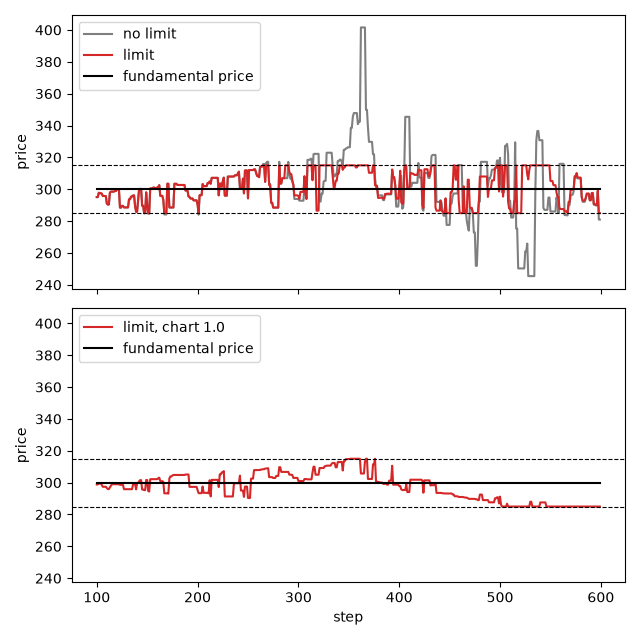

値幅制限¶
値幅制限は、注文の価格を基準価格の周りの価格帯の中に収めます。このチュートリアルは、Plhamのチュートリアル PriceLimitMain と PriceLimitMain_UseCases に沿っています：同じ市場を値幅制限ありとなしで実行し、価格が制限値に張り付く期間を測り、トレンド追随型のエージェントがこの期間を長くするかどうかを確かめます。完全なスクリプトは tutorial_price_limit.py です。プロットには matplotlib が必要ですが、これはPAMSと一緒にはインストールされません（pip install matplotlib）。
モデル¶
市場には100体の FCNAgent エージェントがいます。各エージェントは、ファンダメンタル価格との乖離、直近のトレンド（チャート成分）、ノイズという3つの成分を重み付けして組み合わせ、将来の価格を予想します。この予想価格が市場価格より高ければ予想価格より低い価格で買い注文を出し、そうでなければ予想価格より高い価格で売り注文を出します。
PriceLimitRule は、市場が指値注文を受け取る前に、すべての指値注文の価格を調べます。ステップ0における市場価格を \(P_0\)、率 triggerChangeRate を \(r\) とします。価格が \(P_0 (1 + r)\) 以上の注文は価格が \(P_0 (1 + r)\) に、価格が \(P_0 (1 - r)\) 以下の注文は価格が \(P_0 (1 - r)\) になります。成行注文は変更されません。ここでは \(P_0 = 300\)、\(r = 0.05\) です。このチュートリアルのエージェントは指値注文しか出さないため、その注文の価格はすべて285から315の間にあり、約定もすべてこの範囲で起こります。
価格は一度制限値に達すると、そこに張り付きやすくなります。多くのエージェントが315より高い価格を予想すると、315より高い買い注文はすべて315の買い注文になり、315より高い売り注文も同じく315になります。これらの注文は、エージェントが考えを変えるまで、ちょうど315で互いに約定します。トレンド追随型のエージェントは価格が同じ方向に動き続けると予想し続けるため、価格をより長く制限値に張り付かせるはずです。
設定¶
設定は、リポジトリの samples/price_limit/config.json をPythonのdictとして書いたものです：
CONFIG: Dict[str, Any] = {
"simulation": {
"markets": ["Market"],
"agents": ["FCNAgents"],
"sessions": [
{
"sessionName": 0,
"iterationSteps": 100,
"withOrderPlacement": True,
"withOrderExecution": False,
"withPrint": True,
},
{
"sessionName": 1,
"iterationSteps": 500,
"withOrderPlacement": True,
"withOrderExecution": True,
"withPrint": True,
"events": ["PriceLimitRule"],
},
],
},
"PriceLimitRule": {
"class": "PriceLimitRule",
"targetMarkets": ["Market"],
"triggerChangeRate": 0.05,
"enabled": True,
},
"Market": {
"class": "Market",
"tickSize": 0.00001,
"marketPrice": 300.0,
"outstandingShares": 25000,
},
"FCNAgents": {
"class": "FCNAgent",
"numAgents": 100,
"markets": ["Market"],
"assetVolume": 50,
"cashAmount": 10000,
"fundamentalWeight": {"expon": [0.2]},
"chartWeight": {"expon": [0.0]},
"noiseWeight": {"expon": [1.0]},
"noiseScale": 0.001,
"timeWindowSize": [100, 200],
"orderMargin": [0.0, 0.1],
},
}
最初のセッション（ステップ0から99）は板を埋めるだけです。2番目のセッション（ステップ100から599）では注文の約定も行い、その
eventsにルールを列挙しています。{"expon": [0.2]}は、各エージェントの重みを平均0.2の指数分布から抽出します（ランダムパラメータ（JsonRandom） を参照）。ファンダメンタル成分の重みが0.2、チャート成分の重みが0、ノイズ成分の重みが1.0なので、エージェントは主にノイズに従います。市場には
fundamentalVolatilityがないため、ファンダメンタル価格は300のまま変わりません。
実行¶
run_simulation は、設定のコピーについて、ルールを有効にするかどうか、エージェントのチャート成分の重みの平均、2番目のセッションの長さという3つの値を変更します：
def run_simulation(
seed: int, enabled: bool = True, chart_weight: float = 0.0, main_steps: int = 500
) -> SequentialRunner:
"""Run the simulation with or without the price limit.
Args:
seed (int): seed of the random number generator.
enabled (bool): whether the price limit is on.
chart_weight (float): mean of the chart weights of the FCN agents.
main_steps (int): number of steps of the main session.
Returns:
SequentialRunner: the runner after the run.
"""
config = copy.deepcopy(CONFIG)
config["PriceLimitRule"]["enabled"] = enabled
config["FCNAgents"]["chartWeight"] = {"expon": [chart_weight]}
config["simulation"]["sessions"][1]["iterationSteps"] = main_steps
runner = SequentialRunner(settings=config, prng=random.Random(seed))
# main() prints the time taken, which is not needed here
with contextlib.redirect_stdout(io.StringIO()):
runner.main()
return runner
"enabled": False のルールは何もしません。それでも乱数は引くため、ルールを無効にした実行は、ルールが最初の注文を変更するまで、ルールを有効にした実行と同じになります。
limit_stats は2番目のセッションの価格を読み取り、各制限値にあるステップ数を数えます：
def limit_stats(runner: SequentialRunner) -> Dict[str, float]:
"""Measure how long the price of the main session stays at the limits.
Args:
runner (SequentialRunner): the runner after the run.
Returns:
Dict[str, float]: the lowest and highest prices, the numbers of steps at or
above the upper limit and at or below the lower limit, the longest run of
consecutive steps at or beyond a limit, and the number of orders whose price
the rule changed.
"""
market = runner.simulator.name2market["Market"]
main_session = runner.simulator.sessions[1]
start = main_session.session_start_time
prices: List[float] = market.get_market_prices(
times=range(start, start + main_session.iteration_steps)
)
rate: float = CONFIG["PriceLimitRule"]["triggerChangeRate"]
upper = market.get_market_price(0) * (1 + rate)
lower = market.get_market_price(0) * (1 - rate)
at_upper = [price >= upper - TICK for price in prices]
at_lower = [price <= lower + TICK for price in prices]
longest = 0
current = 0
for up, down in zip(at_upper, at_lower):
current = current + 1 if up or down else 0
longest = max(longest, current)
# a disabled event registers no hooks and is not in name2event
event = runner.simulator.name2event.get("PriceLimitRule")
return {
"lowest": min(prices),
"highest": max(prices),
"upper": sum(at_upper),
"lower": sum(at_lower),
"longest": longest,
"changed": event.activation_count if isinstance(event, PriceLimitRule) else 0,
}
価格は、制限値からティックサイズ（0.00001）以内にあるとき、制限値にあるとみなします。ルールがない場合は、制限値を超えた価格も数えます。
longestは、価格が連続して制限値にあるステップ数の最大値です。約定のないステップでは直前の価格が引き継がれるため、そのステップも数えます。ルールの
activation_countは、ルールが価格を変更した注文の数です。ルールはどのセッションに列挙されていてもステップ0から有効なので、この数には最初のセッションの注文も含まれます。無効なイベントは
simulator.name2eventに追加されないため、ルールがない場合、この数は0になります。
価格が制限値に張り付く期間¶
スクリプトはまず、シード42で3つのケースを実行します：ルールあり、ルールなし、そしてチャート成分の重みの平均を1.0にしたルールありです。出力は次のとおりです：
case lowest highest upper lower longest changed
limit 285.00 315.00 99 34 20 296
no limit 245.47 401.56 102 50 31 0
limit, chart 1.0 285.00 315.00 13 89 54 236
ルールがない場合、価格は245.47から401.56の間を動きます。500ステップのうち102ステップで315以上、50ステップで285以下になります。ルールがある場合、価格は価格帯から出ません：315にあるのが99ステップ、285にあるのが34ステップで、ルールは296件の注文の価格を変更しました。
値幅制限によって極端な価格が少なくなるわけではありません：価格が制限値にあるのは133ステップで、ルールがない場合に制限値またはその外側にあったのは152ステップです。制限は極端な値を切り取るだけです。また、この実行では価格が一方の制限値に長く張り付くこともありません。価格は32回（315に21回、285に11回）制限値に到達し、最長の張り付き期間は20ステップです。
図の上段はこの2つの実行を示しています。両者の価格は、価格が初めて制限値に達するステップ147まで同じです：

より強いトレンド追随¶
3つ目のケースでは、チャート成分の重みの平均を0から1.0に上げます。エージェントは予想リターンを3つの重みの合計で割るため、チャート成分の重みを大きくすると、ノイズの影響も小さくなります。図の下段では、価格はよりゆっくり動きます。ステップ352で315に達してステップ361までとどまり、その後2回315に戻ります。最後に戻るのはステップ376です。ステップ502で285に達し、最後の54ステップはすべて285です：価格が制限値に張り付いたまま実行が終わります。
1回の実行ではケースを比較するのに十分でないため、スクリプトはルールありの実行を、シード42から51とチャート成分の重みの平均0、0.5、1.0で繰り返します。10個のシードでの平均を出力し、続いて各シードの最長の張り付き期間を出力します：
chart weight steps at a limit longest stay changed orders
0.0 131.7 16.4 311.0
0.5 95.2 21.0 261.8
1.0 93.2 35.2 247.3
longest stay of each seed:
0.0 20 10 9 11 30 43 11 10 11 9
0.5 32 15 8 17 12 51 12 39 11 13
1.0 54 13 13 94 80 11 43 15 16 13
トレンド追随型のエージェントが強いほど、最長の張り付き期間は平均して長くなります：チャート成分の重みが1.0では35.2ステップで、トレンド追随型のエージェントがいない場合の16.4ステップより長くなります。これはPlhamのチュートリアルが述べている効果です。
この効果はシードによって大きく異なります。チャート成分の重みが1.0の場合、10個のシードのうち6個では最長の張り付き期間が16ステップ以下で、これはトレンド追随型のエージェントがいない場合にもよく見られる値です。平均を押し上げているのは主にシード45（94ステップ）とシード46（80ステップ）です。
張り付きのうち3つ（シード42、46、48）は実行の終わりまで続いているため、実行を長くすればさらに長くなる可能性があります。Plhamのチュートリアルは、500ステップ以内に価格が制限値に達しない場合、5000ステップ程度にすることを勧めています。ここでの実行は、設定の500ステップのままです。
トレンド追随型のエージェントがいると、価格が制限値にあるステップ数の合計は少なくなります（131.7に対して93.2）が、1回ごとの張り付きは長くなります。
スクリプトは、制限なしでチャート成分の重みを1.0にしたケースは実行しません。これほど強いトレンド追随型のエージェントがいて、それを止めるものがないと、価格は発散します：シード42では実行が OverflowError で停止し、シード43と44では価格がティックサイズである0.00001まで下がります。
スクリプトの実行¶
完全なスクリプトを python tutorial_price_limit.py で実行すると、上の2つの表を出力し、カレントディレクトリに price_limit_prices.png を書き出します。600ステップのシミュレーションを33回実行します。
売買停止は、注文の価格を動かす代わりに、しばらくの間取引を止めます：売買停止 を参照してください。
Plhamとの違い¶
Plhamのチュートリアルは価格を2か所で制限します：エージェントが自分の注文を価格帯の中に収め、市場も価格帯を強制します。PAMSにあるのは市場側だけです。
FCNAgentエージェントは制限を知らず、PriceLimitRuleがその注文を動かします。Plhamは基準価格を参照市場から取ります。PAMSは各市場を、それ自身のステップ0の価格（この価格は変わりません）と比べ、古い設定にある
referenceMarketキーは警告を出したうえで無視します。上の数値はシード42から51でのPAMSの結果で、Plhamのチュートリアルの図とは一致しません。Plhamの最初の実行では、価格はステップ200付近からしばらく上限に張り付き、その後ステップ400付近から下限に張り付きます。ここでの実行ではこのパターンは見られません：価格が制限値に達する回数はずっと多く、トレンド追随型のエージェントがいない場合、10個のシードでの最長の張り付き期間は43ステップです。
参考文献¶
水田孝信, 和泉潔, 八木勲, 吉村忍 (Mizuta, Izumi, Yagi and Yoshimura) (2013). 人工市場を用いた値幅制限・空売り規制・アップティックルールの検証と最適な制度の設計. IEEJ Transactions on Electronics, Information and Systems, 133(9), 1694–1700. doi:10.1541/ieejeiss.133.1694. Plhamのチュートリアルには、この研究の2009年版が挙げられています。
Chiarella, C. and Iori, G. (2002). A simulation analysis of the microstructure of double auction markets. Quantitative Finance, 2(5), 346–353. FCNエージェントはこのモデルに由来します。